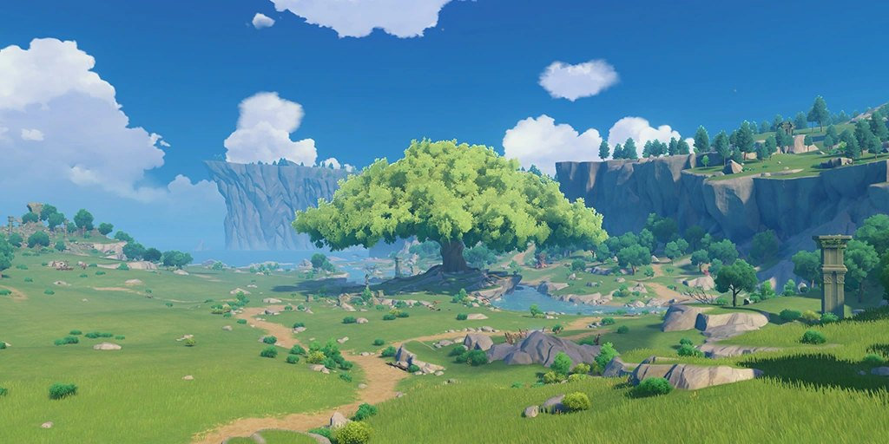
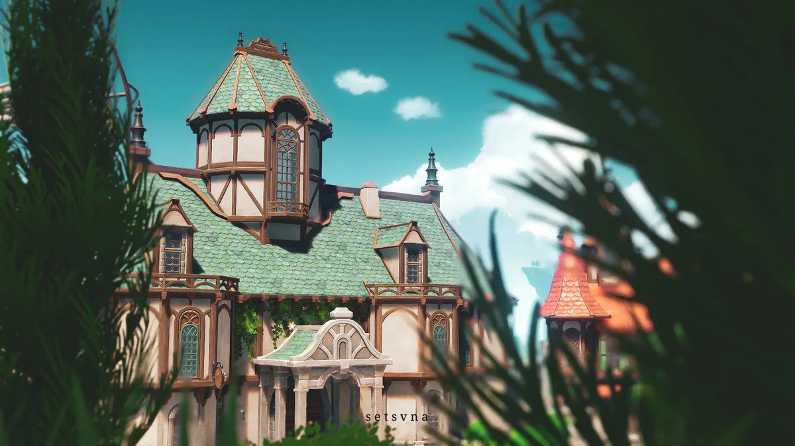
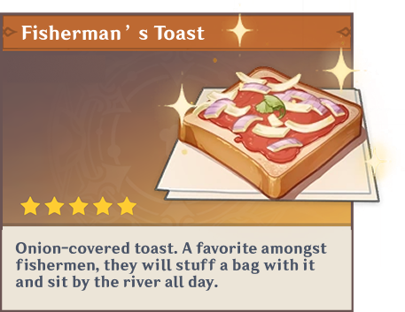
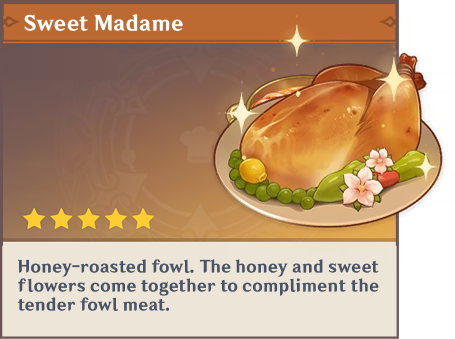
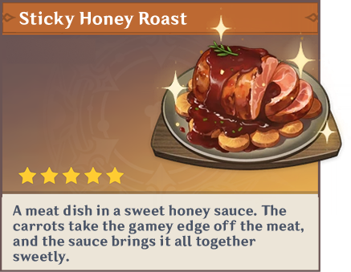
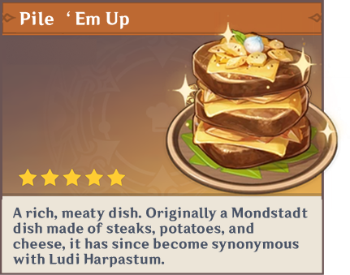

Windswept Wilderness
Windrise

An open meadow where an ancient great tree catches the breeze and the whole valley rolls out below.
The City of Freedom Expedition
Experience the romantic charm of windmills, rolling green hills, and vibrant stone architecture. Perfect for travelers looking for a relaxing nature getaway.
 3 Days / 2 Nights
3 Days / 2 Nights
Your day-by-day journey
Every day balances guided discovery with enough breathing room to enjoy the destination your way. Timing may adjust for weather and local events.

Touch down at the city gates and settle in with a welcome walk past the old streets, windmills, and the Cider Lake shoreline. Your guide handles check-in so the evening is yours to wander.
 Overnight at Mondstadt City
Overnight at Mondstadt City
Head out to the open meadows of Windrise for a slow, scenic day beside the great tree. Picnic stops, viewpoints, and time for photographs are built into the route.
 Overnight at Mondstadt City
Overnight at Mondstadt City
Spend the final morning at the Favonius Cathedral before a relaxed lunch and transfer, with one last look at the city of freedom.

Taste the culture

 Fisherman's Toast
Fisherman's Toast

 Sweet Madame
Sweet Madame

 Sticky Honey Roast
Sticky Honey Roast

 Pile 'Em Up
Pile 'Em Up